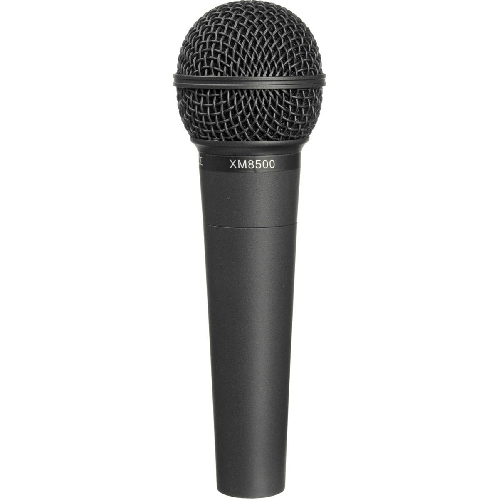
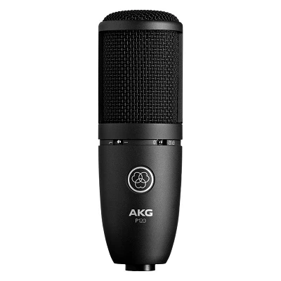
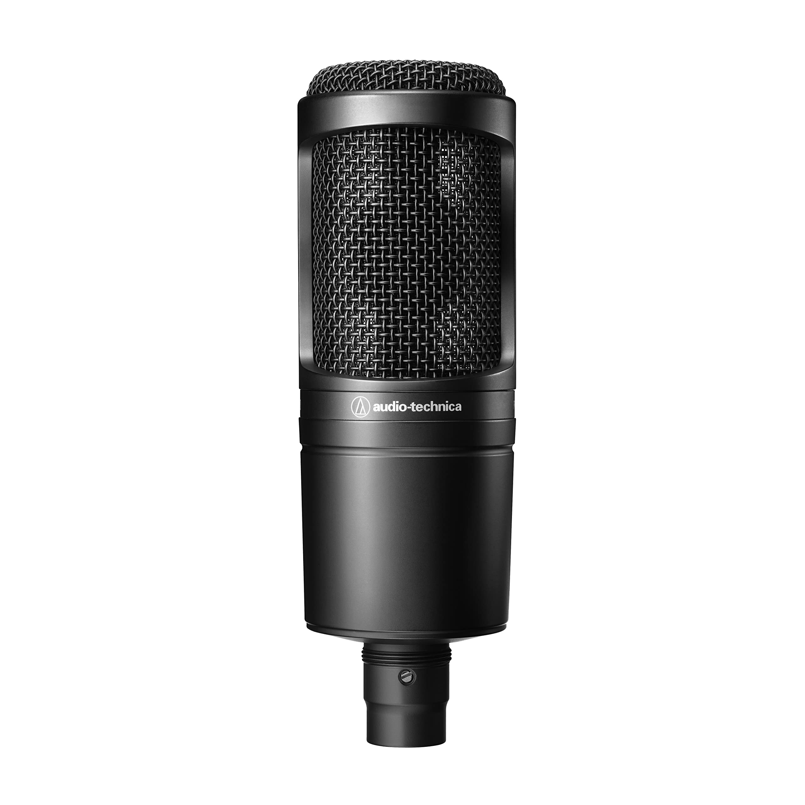

Catàleg de Micròfons
Micròfons per veu, instruments, gravació i proves de so.
Models disponibles
 MICRÒFONS Shure SM58 Micròfon estàndard per veu en directe. És molt resistent i fiable. Té bon rebuig de soroll. Reservar |
 MICRÒFONS Behringer XM8500 Micròfon econòmic per iniciació. Té bon rendiment pel preu. És robust i funcional. Reservar |
 MICRÒFONS Rode NT1-A Micròfon professional d’estudi amb molt baix soroll. Ofereix gran qualitat de so. Ideal per veu i gravació. Reservar |
 MICRÒFONS AKG P120 Micròfon versàtil per veu i instruments. Té bona sensibilitat i claredat. Ideal per home studio. Reservar |
|
 MICRÒFONS Audio-Technica AT2020 Micròfon molt popular per gravació casolana. Ofereix so net i detallat. És fiable i fàcil d’utilitzar. Reservar |